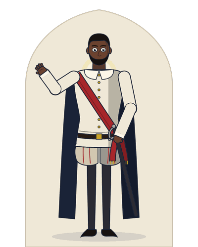
Othello
The Moor, general of Venice, of royal descent. He marries Desdemona in secret, is deceived by Iago, kills her and himself.
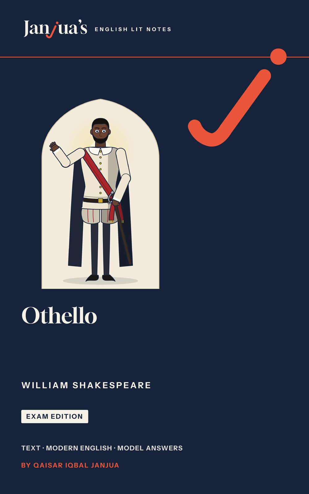
Othello is William Shakespeare’s tragedy of a noble Moorish general who is destroyed by the lies of his ensign Iago, and who kills the wife he loves. This Othello study guide gives you the complete play with a plain modern English line under every line of verse, the meaning of every prose speech, a unit for every scene or group of scenes, and the answers examiners look for.
The book is being prepared for Amazon now. Send one short email and you will hear as soon as it is out.
Email me when it is outThis opens your email app with a short message to qaisar@janjuaslitnotes.com already written: just press Send. Your email address is used only to tell you when this book is out. How your email is used.
Othello is a tragedy in five acts: Othello, the general of Venice, secretly marries Desdemona, and Iago, who hates him, makes him believe that she loves Cassio. Driven by jealousy, Othello smothers her; when Emilia exposes Iago, he stabs himself. Here is the whole play act by act, as the book sums it up.
At night in Venice, Iago tells Roderigo that he hates Othello, a Moor and the city’s general, for making Michael Cassio his lieutenant. Roderigo loves Desdemona, but she has secretly married Othello. The two wake her father, Brabantio, with crude news of the elopement. Brabantio confronts Othello and accuses him of witchcraft, but the Duke and senators are meeting because a Turkish fleet threatens Cyprus. Before them Othello tells how he won Desdemona by the story of his life, and Desdemona declares that she owes him her duty. The Duke sends Othello to Cyprus, and Desdemona goes with him in Iago’s care. Alone, Iago plans to make Othello think that Cassio is too familiar with his wife.
A storm drowns the Turkish fleet. Desdemona, Iago, Emilia and Roderigo land, then Othello, and the couple meet in great joy. That night, at the feast, Iago makes Cassio drunk; Roderigo provokes him; Cassio wounds Montano, and Othello dismisses him. Iago advises Cassio to ask Desdemona to plead for him, planning to tell Othello that she does it out of lust.
Desdemona promises Cassio her help. Iago hints, echoes and warns against “the green-eyed monster”, and Othello begins to doubt. Desdemona drops the handkerchief that was Othello’s first gift; Emilia gives it to Iago, who leaves it in Cassio’s lodging. Othello demands proof; Iago reports Cassio’s dream and says he saw Cassio with the handkerchief. Othello vows revenge and makes Iago his lieutenant. He demands the handkerchief from Desdemona, who cannot produce it; Cassio gives it to Bianca to copy.
Iago’s words throw Othello into a fit. Hidden, he watches Cassio laugh about Bianca and thinks he is boasting of Desdemona; Bianca returns the handkerchief. Lodovico arrives from Venice recalling Othello and appointing Cassio governor, and Othello strikes Desdemona in public. He calls her a whore to her face. Iago sets Roderigo to kill Cassio. Desdemona, ordered to bed, sings the willow song while Emilia speaks for wives.
Roderigo attacks Cassio in the dark; Iago wounds Cassio and kills Roderigo. Othello smothers Desdemona in her bed. Emilia discovers the murder and learns that her husband accused Desdemona; she reveals the truth about the handkerchief, and Iago kills her. Letters found on Roderigo confirm the plot. Othello wounds Iago, asks to be remembered as one “that loved not wisely but too well;” (5.2.347), stabs himself and dies on a kiss. Cassio is left to rule Cyprus and to judge Iago.
Othello was first printed in a Quarto in 1622 and in a fuller text in the First Folio of 1623; some famous passages, among them the willow song, are missing from the first printing. The play has five acts and 15 scenes.
15 units, one for each scene or group of scenes, then the essays and the revision. Every unit follows the same plan, so you always know where to look.
The text is the Cambridge Shakespeare, edited by William George Clark and William Aldis Wright (Volume VIII, Macmillan, 1866), with obvious misprints corrected. Every quotation and line number in the book is checked against it, and every quotation carries act, scene and line: 3.3.170 means Act 3, Scene 3, line 170.
Paperback, 6 x 9 in, 441 pages, and a Kindle ebook.
On Kindle now
Unit 14: “Put Out the Light”, complete, with the title page, A Note from the Author and the contents.
Every line of the play’s verse has a plain modern English line under it, and the hard words are explained after the passage. This is Othello’s answer to the charge of witchcraft, as the book prints it.
“If you have opened this book, you probably have an exam coming, and a play that many readers find the most painful of Shakespeare’s tragedies. Othello is a story of love, jealousy and lies: a noble general, a brave young wife, and a villain whom everyone calls “honest”. It moves fast, it is full of famous lines, and its questions about trust, race and power are still argued today. None of it needs to frighten you. You need to know what is happening, why the characters act as they do, and how to write about it well.”
Othello answers the charge of witchcraft Act 1, Scene 3 · Lines 167 to 170
She loved me for the dangers I had pass’d,
She loved me for the dangers I had been through,
And I loved her that she did pity them.
And I loved her because she pitied them.
This only is the witchcraft I have used.
This is the only witchcraft I have used.
Here comes the lady; let her witness it.
Here comes the lady; let her be the witness.
Words
The book gives one unit to each scene or group of scenes: 15 units in all, from the opening quarrel in the street to Othello’s last speech. Each line below is the book’s own summary of the scene.
Iago, passed over for promotion, tells Roderigo he hates the Moor. Together they wake Brabantio with crude news: his daughter has eloped.
Othello, newly married, stays calm as Iago warns him. The Duke sends for him, and Brabantio arrives with swords to arrest the “thief”.
Before the Duke, Othello answers the charge of witchcraft with the story of his courtship. Desdemona backs him, and goes with him to Cyprus.
Iago stops Roderigo from drowning himself with promises of Desdemona. Alone, he plots to make Othello think Cassio loves his wife.
A storm drowns the Turkish fleet. Desdemona lands safely, Othello follows, and their joyful reunion is watched by Iago, who plots again.
At the victory feast Iago makes Cassio drunk. A brawl wakes the island, Othello dismisses Cassio, and Iago sends him to Desdemona for help.
Desdemona promises to plead for Cassio. Iago’s hints, echoes and warnings plant the first doubts, and Othello begins to suspect his wife.
Desdemona drops her handkerchief, and Emilia gives it to Iago. Tortured by doubt, Othello demands proof, believes Iago’s lies and swears revenge.
Othello demands the lost handkerchief and tells of its magic. Desdemona pleads for Cassio, Othello storms out, and Cassio gives the handkerchief to Bianca.
Iago’s words throw Othello into a fit. Hidden, he watches Cassio laugh about Bianca, decides on murder, then strikes Desdemona before Lodovico.
Othello questions Emilia, then calls Desdemona a whore. Emilia guesses that some villain is to blame. Iago soothes Desdemona and sets Roderigo against Cassio.
Ordered to bed, Desdemona sings a sad old song of willow while Emilia unpins her. The two women talk frankly about husbands and faithfulness.
Roderigo attacks Cassio in the dark and is wounded. Iago wounds Cassio, then kills Roderigo, and blames Bianca. Othello, hearing the cries, goes to kill Desdemona.
Othello kisses the sleeping Desdemona, wakes her, accuses her and smothers her. Emilia arrives too late, hears that Iago accused her, and cries murder.
Emilia exposes Iago, who kills her. Letters confirm the plot. Othello wounds Iago, asks to be remembered truly, and kills himself on Desdemona’s bed.
Othello turns on a general, his wife and the ensign who destroys them, with Emilia, Cassio and Roderigo caught in the plot. The book has fifteen drawings in one house style; here they are with the book’s own notes on each.

The Moor, general of Venice, of royal descent. He marries Desdemona in secret, is deceived by Iago, kills her and himself.
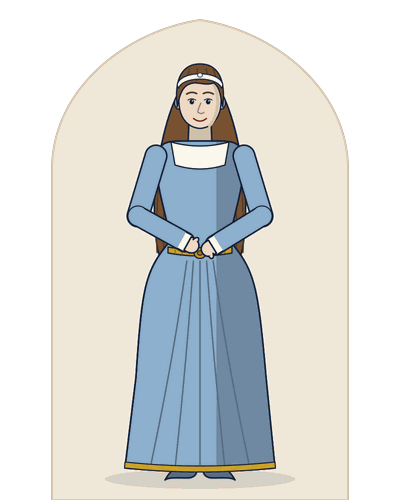
Brabantio’s daughter and Othello’s wife, brave, loving and true.
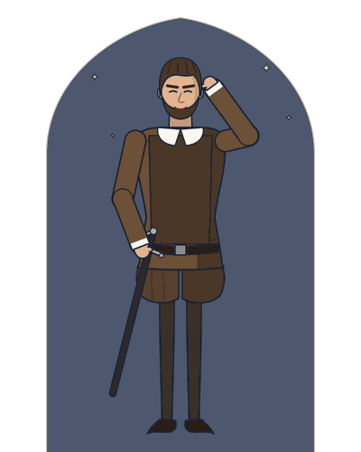
Othello’s ensign, twenty-eight, called “honest” by all. He plots the destruction of Othello, Desdemona and Cassio.
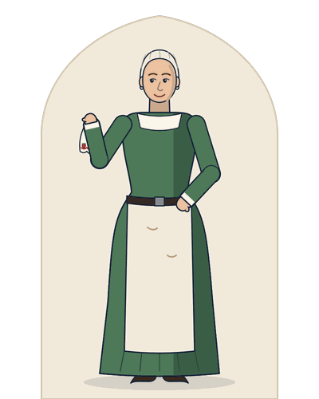
Iago’s wife and Desdemona’s attendant. She gives Iago the handkerchief, and in the end exposes him.
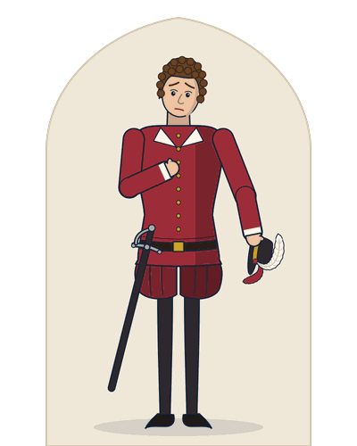
Othello’s lieutenant, a courteous Florentine. Dismissed for a drunken brawl, he survives to govern Cyprus.
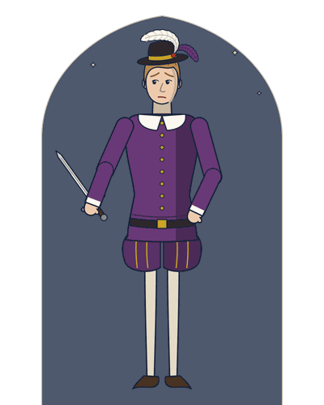
A rich, foolish Venetian who loves Desdemona and pays Iago to help him. Iago kills him.
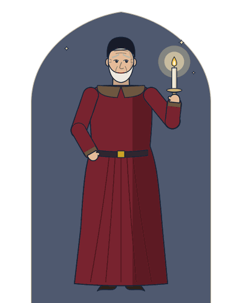
A senator, Desdemona’s father, who accuses Othello of witchcraft and dies of grief.
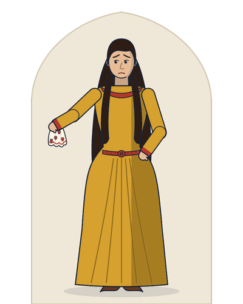
A courtesan who loves Cassio; she returns the handkerchief at the fatal moment.
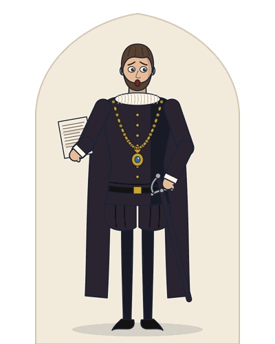
A Venetian noble, Desdemona’s kinsman, who brings the letter recalling Othello and takes command at the end.
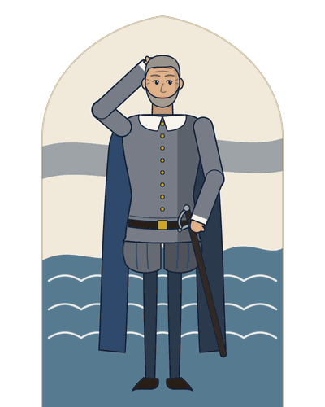
A storm drowns the Turkish fleet. Desdemona lands safely, Othello follows, and their joyful reunion is watched by Iago, who plots again.
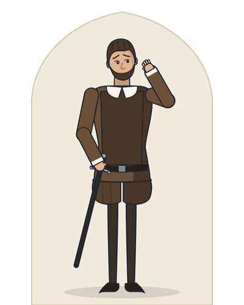
Desdemona promises to plead for Cassio. Iago’s hints, echoes and warnings plant the first doubts, and Othello begins to suspect his wife.
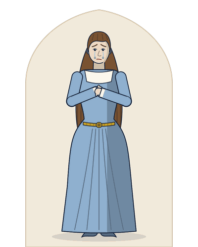
Othello questions Emilia, then calls Desdemona a whore. Emilia guesses that some villain is to blame. Iago soothes Desdemona and sets Roderigo against Cassio.
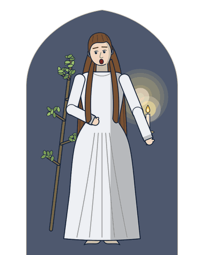
Ordered to bed, Desdemona sings a sad old song of willow while Emilia unpins her. The two women talk frankly about husbands and faithfulness.
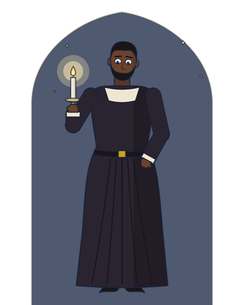
Othello kisses the sleeping Desdemona, wakes her, accuses her and smothers her. Emilia arrives too late, hears that Iago accused her, and cries murder.
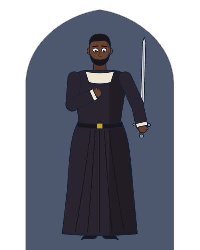
Emilia exposes Iago, who kills her. Letters confirm the plot. Othello wounds Iago, asks to be remembered truly, and kills himself on Desdemona’s bed.
These are thirteen of the forty key passages in the book’s passage bank, each with its speaker, its act, scene and line in the Cambridge text, and the first thing the book says about why it matters.
| Passage | Speaker and line | Why it matters |
|---|---|---|
| “I am not what I am.” | Iago1.1.66 | The play’s motto of appearance and reality; it twists God’s “I am that I am” into its opposite. |
| “Keep up your bright swords, for the dew will rust them.” | Othello1.2.59 | Command without violence; the calm that Iago will destroy. |
| “She loved me for the dangers I had pass’d, / And I loved her that she did pity them.” | Othello1.3.167-168 | The love story in two lines; the only “witchcraft” was a story. |
| “If it were now to die, / ’Twere now to be most happy;” | Othello2.1.186-187 | The height of joy, and dramatic irony: his next joy will be death. |
| “Reputation, reputation, reputation! O, I have lost / my reputation!” | Cassio2.3.252-253 | Honour as the soul of a soldier; Iago mocks it here and praises it to Othello later. |
| “O, beware, my lord, of jealousy; / It is the green-eyed monster, which doth mock / The meat it feeds on:” | Iago3.3.169-171 | The play’s most famous image, spoken by the man who is causing the jealousy. |
| “Haply, for I am black” | Othello3.3.267 | The prejudice of others enters his own mind for the first time. |
| “Trifles light as air / Are to the jealous confirmations strong / As proofs of holy writ:” | Iago3.3.326-328 | The theory behind the handkerchief plot, and the nature of jealousy. |
| “That handkerchief / Did an Egyptian to my mother give;” | Othello3.4.55-56 | The magic of the handkerchief; its loss seems to prove the worst. |
| “but yet the pity of it, Iago! / O Iago, the pity of it, Iago!” | Othello4.1.190-191 | Love survives inside his rage; the audience feels the waste. |
| “The poor soul sat sighing by a sycamore tree, / Sing all a green willow;” | Desdemona4.3.39-40 | The willow song of lost love foreshadows her death. |
| “Put out the light, and then put out the light:” | Othello5.2.7 | The candle and her life; murder calmly called justice. |
| “Speak of me as I am; nothing extenuate, / Nor set down aught in malice:” | Othello5.2.345-346 | His last judgement on himself; readers still argue whether it is noble or self-deceiving. |
The book answers the twelve questions examiners set most often on Othello with twelve model essays. Each is written in full for long papers, with a marked cut line where a shorter answer can stop. These are the topics:
Four pages as they appear in the book: the title page, a scene card, a page of text with modern English, and a critical note. Select a page to see it larger.
Short, direct answers taken from the Othello study guide itself.
Yes. It prints the complete play from the Cambridge Shakespeare, edited by William George Clark and William Aldis Wright (Volume VIII, Macmillan, 1866), in 15 units, one for each scene or group of scenes. Under every line of verse there is a plain modern English line; where a speech is in prose, the modern English follows it as one paragraph.
Yes. Every line of verse has a plain modern English line beneath it, and every prose speech is followed by its meaning in modern English. “She loved me for the dangers I had pass’d” (1.3.167), for example, becomes “She loved me for the dangers I had been through”.
The book follows six themes through the play: jealousy (jealousy and suspicion), race (race, prejudice and the outsider), deceit (deception, honesty and appearance), love (love and marriage), honour (reputation, honour and the soldier’s world) and women (women and men). Every point on a scene card carries its theme tag, and the tag names the essays it serves: jealousy leads to Essays 1 and 6, race to Essay 7, deceit to Essays 2 and 8, love to Essays 3 and 9, honour to Essays 5 and 11, and women to Essays 4 and 10.
The book’s twelve model essays answer the Othello questions examiners set most often: character sketches of Othello, Iago and Desdemona, critical notes on Emilia and Cassio, then the themes of jealousy, race and the outsider, appearance and reality, love and marriage, women and men, reputation and honour, and the question of who destroys Othello. Each essay is written in full for long papers, with a marked cut line where a shorter answer can stop.
Othello stifles Desdemona in her bed (5.2.86). Iago kills Roderigo (5.1.61) and Emilia (5.2.238). Othello stabs himself (5.2.359). Cassio and Montano are wounded but live; Iago is wounded and kept for torture. Brabantio has died offstage, of grief (5.2.207-209).
Not always. The book keeps the line numbers of the Cambridge text of 1866, which numbers lines differently from some modern editions, above all in prose. Every quotation carries act, scene and line: 3.3.170 means Act 3, Scene 3, line 170. Examiners name passages by act and scene, so know each passage by its sense as well as by its number.
Both, the book argues. Iago is the active cause: he plans every step, lies to everyone and enjoys the destruction. But his plot works only because Othello is trusting, inexperienced in love, insecure as an outsider and quick to act, and chance and the prejudice of Venice help too. The tragedy lies in the meeting of a great villain with the particular weaknesses of a great man.
The free PDF sample has the title page, A Note from the Author, the contents and the whole of Unit 14: “Put Out the Light”, as it appears in the book.